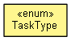

org.waarp.openr66.context.task
Enum TaskType
java.lang.Object
 java.lang.Enum<TaskType>
org.waarp.openr66.context.task.TaskType
java.lang.Enum<TaskType>
org.waarp.openr66.context.task.TaskType
- All Implemented Interfaces:
- Serializable, Comparable<TaskType>
public enum TaskType
- extends Enum<TaskType>

This enum class references all available tasks.
If a new task type is to be created, this is the place where it should be referenced.
- Author:
- Frederic Bregier
|
Method Summary |
static AbstractTask |
getTaskFromId(String name,
String argRule,
int delay,
R66Session session)
|
static AbstractTask |
getTaskFromId(TaskType type,
String argRule,
int delay,
R66Session session)
|
static AbstractTask |
getTaskFromIdForBusiness(String name,
String argRule,
int delay,
R66Session session)
For usage in ExecBusinessTask |
static TaskType |
valueOf(String name)
Returns the enum constant of this type with the specified name. |
static TaskType[] |
values()
Returns an array containing the constants of this enum type, in
the order they are declared. |
LOG
public static final TaskType LOG
MOVE
public static final TaskType MOVE
MOVERENAME
public static final TaskType MOVERENAME
COPY
public static final TaskType COPY
COPYRENAME
public static final TaskType COPYRENAME
EXEC
public static final TaskType EXEC
EXECMOVE
public static final TaskType EXECMOVE
LINKRENAME
public static final TaskType LINKRENAME
TRANSFER
public static final TaskType TRANSFER
VALIDFILEPATH
public static final TaskType VALIDFILEPATH
DELETE
public static final TaskType DELETE
TAR
public static final TaskType TAR
ZIP
public static final TaskType ZIP
EXECOUTPUT
public static final TaskType EXECOUTPUT
RESCHEDULE
public static final TaskType RESCHEDULE
EXECJAVA
public static final TaskType EXECJAVA
TRANSCODE
public static final TaskType TRANSCODE
SNMP
public static final TaskType SNMP
FTP
public static final TaskType FTP
RENAME
public static final TaskType RENAME
RESTART
public static final TaskType RESTART
type
public int type
name
public String name
values
public static TaskType[] values()
- Returns an array containing the constants of this enum type, in
the order they are declared. This method may be used to iterate
over the constants as follows:
for (TaskType c : TaskType.values())
System.out.println(c);
- Returns:
- an array containing the constants of this enum type, in
the order they are declared
valueOf
public static TaskType valueOf(String name)
- Returns the enum constant of this type with the specified name.
The string must match exactly an identifier used to declare an
enum constant in this type. (Extraneous whitespace characters are
not permitted.)
- Parameters:
name - the name of the enum constant to be returned.
- Returns:
- the enum constant with the specified name
- Throws:
IllegalArgumentException - if this enum type has no constant
with the specified name
NullPointerException - if the argument is null
getTaskFromId
public static AbstractTask getTaskFromId(TaskType type,
String argRule,
int delay,
R66Session session)
throws OpenR66RunnerErrorException
- Parameters:
type - argRule - delay - session -
- Returns:
- the corresponding AbstractTask
- Throws:
OpenR66RunnerErrorException
getTaskFromId
public static AbstractTask getTaskFromId(String name,
String argRule,
int delay,
R66Session session)
throws OpenR66RunnerErrorException
- Parameters:
name - argRule - delay - session -
- Returns:
- the corresponding AbstractTask
- Throws:
OpenR66RunnerErrorException
getTaskFromIdForBusiness
public static AbstractTask getTaskFromIdForBusiness(String name,
String argRule,
int delay,
R66Session session)
throws OpenR66RunnerErrorException
- For usage in ExecBusinessTask
- Parameters:
name - argRule - delay - session -
- Returns:
- the corresponding AbstractTask
- Throws:
OpenR66RunnerErrorException
Copyright © 2009-2013 Waarp. All Rights Reserved.